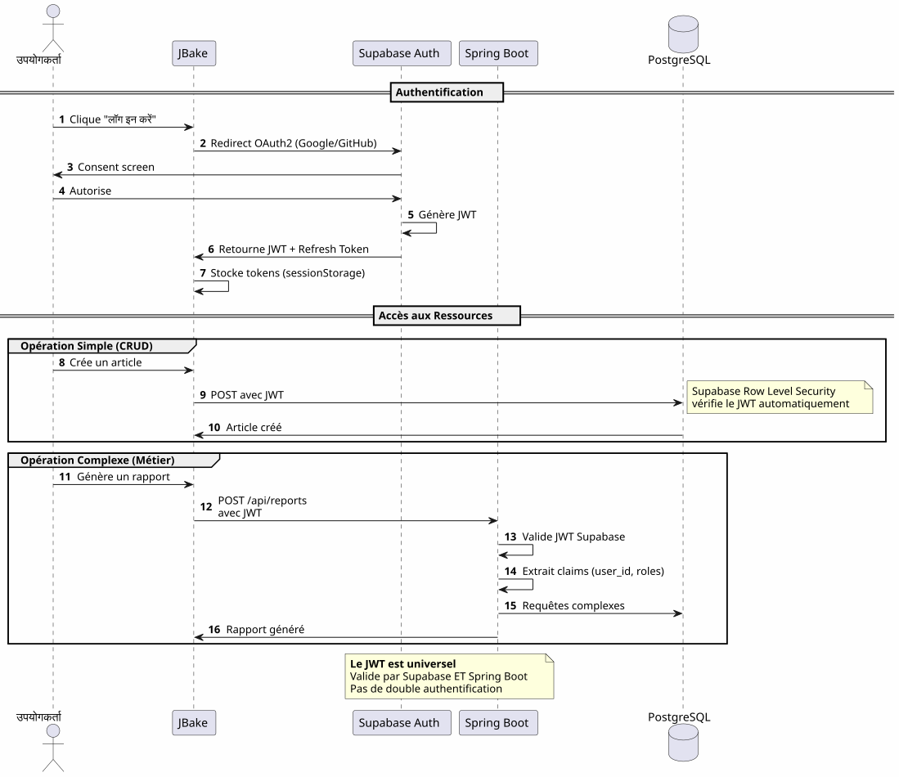
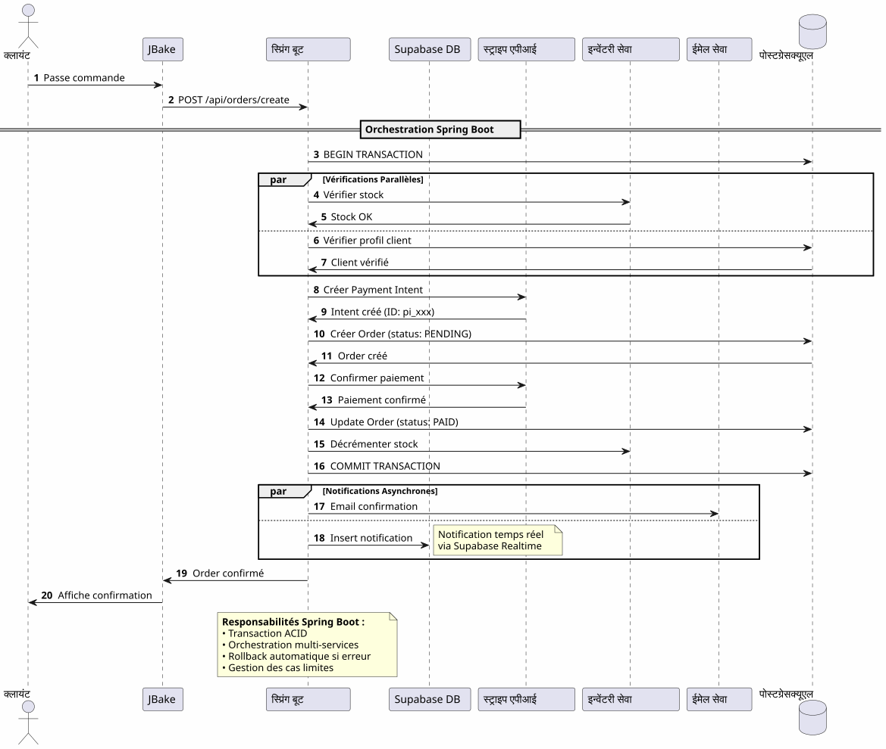
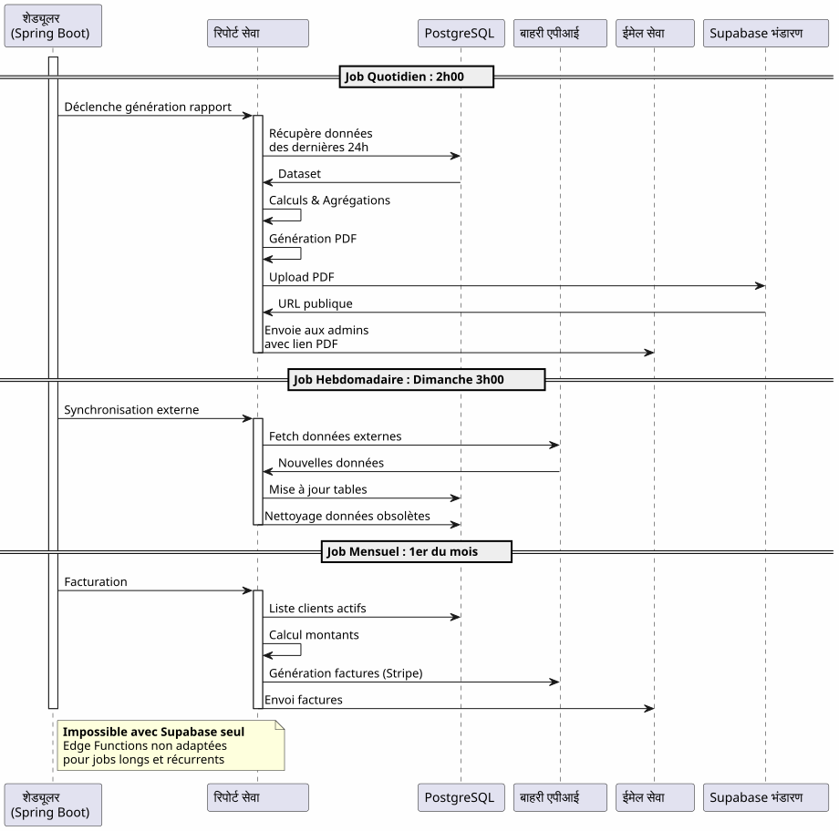
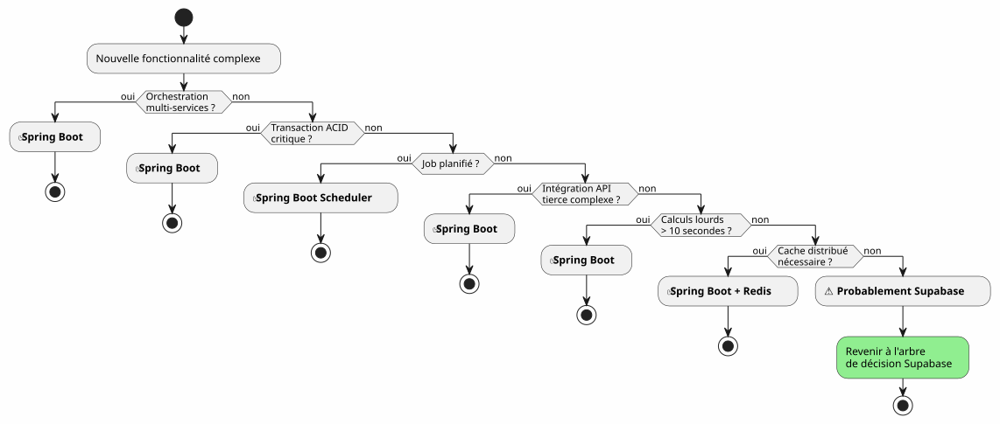

हाइब्रिड आर्किटेक्चर : दोनों दुनिया का सर्वश्रेष्ठ Supabase और Spring Boot के साथ
Publié le 14 January 2026
सुपाबेस की सरलता और स्प्रिंग बूट की शक्ति के बीच चयन करने के बजाय, दोनों को क्यों नहीं मिलाएँ? एक हाइब्रिड आर्किटेक्ट खोजें जो प्रत्येक तकनीक के सर्वश्रेष्ठ पहलुओं का उपयोग करता है।
- सामग्री की तालिका
-
(No output)
आधुनिक वास्तुकला का झूठा दुविधा
जब कोई आधुनिक एप्लिकेशन एक स्थिर फ्रंटएंड के साथ बनाता है, तो वह अक्सर द्विआधारी विकल्प के सामने आ जाता है:
-
एक बैकएंड-एज़-ए-सेवा समाधान पर सब कुछ दांव लगाना(Supabase, Firebase) - सरल लेकिन सीमित
-
एक पूर्ण बैकएंड बनाएँ(Spring Boot, Node.js) - शक्तिशाली लेकिन जटिल
यह विकल्प एक गलत द्वंद्व है। हाइब्रिड आर्किटेक्चर एक तीसरा रास्ता प्रस्तुत करता है: हर तकनीक का उपयोग उस जगह करें जहाँ वह उत्कृष्ट होती है।
वास्तुकल दृष्टि
पारंपरिक आर्किटेक्चर: मोनोलिथिक
इस दृष्टिकोण में, सबसे सरल संचालन (एक लेख पढ़ना, एक टिप्पणी बनाना) भी आपके बैकएंड से गुजरना चाहिए। आप पहले दिन से ही जटिलता की लागत चुकाते हैं।
BaaS आर्किटेक्चर: सब प्रतिनिधि
दूसरी ओर, BaaS पर सब कुछ बाहर रखना शुरू में आकर्षक लगता है, परंतु जब व्यावसायिक तर्क जटिल होने लगता है, तो यह तेज़ी से अपनी सीमाएँ दिखाने लगता है।
हाइब्रिड आर्किटेक्चर : जिम्मेदारियों का विभाजन
हाइब्रिड आर्किटेक्चर जटिलता और संचालन की प्रकृति के अनुसार स्पष्ट रूप से जिम्मेदारियों को अलग करता है।
डिज़ाइन के सिद्धांत
सिद्धांत 1: सरलता से शुरू करें, बुद्धिमानी से विकसित हों
यदि आपको इसकी आवश्यकता नहीं है, तो Spring Boot का निर्माण न करें।Supabase से शुरू करें, जब जटिलता इसकी मांग करे तो Spring Boot जोड़ें.
सिद्धान्त 2 : ऑपरेशन की प्रकृति से पृथक्करण

सिद्धांत 3: एक ही सत्य का स्रोत
PostgreSQL की एक ही इंस्टेंस साझा करके, Supabase और Spring Boot एक ही डेटा पर काम करते हैं, बिना जटिल सिंक्रोनाइज़ेशन के।
फ़्लक्स की ऑर्केस्ट्रेशन
फ़्लक्स 1: केंद्रीकृत प्रमाणीकरण

मुख्य बिंदुएक ही प्रमाणीकरण प्रक्रिया, एक ही JWT, हर जगह उपयोग करने योग्य.
Flux 2 : एक जटिल व्यावसायिक प्रक्रिया का ऑर्केस्ट्रेशन

Spring Boot क्या लाता हैलेनदेन गारंटी के साथ कई प्रणालियों को शामिल करते हुए जटिल प्रक्रियाओं की विश्वसनीय आर्केस्ट्रेशन
फ़्लक्स 3 : नियोजित कार्य और सिंक्रोनाइज़ेशन

Spring Boot क्या लाता हैविश्वसनीय निर्धारित जॉब्स के साथ स्थिति प्रबंधन, स्वचालित पुनः प्रयास, और सुनिश्चित निष्पादन.
निर्णय मेट्रिक्स
Supabase का उपयोग कब करें ?

स्प्रिंग बूट का उपयोग कब करें?

परियोजना प्रकार के अनुसार आर्किटेक्चर के उदाहरण
ब्लॉग / पोर्टफ़ोलियो
निर्णय100% Supabase बहुत पर्याप्त है
SaaS एप्लिकेशन
निर्णयहाइब्रिड आर्किटेक्चर आवश्यक है। Supabase मुख्य हिस्से के लिए, Spring Boot महत्वपूर्ण भाग (भुगतान, बिलिंग) के लिए।
इलेक्ट्रॉनिक वाणिज्य
निर्णय: Spring Boot आवश्यक है। Supabase केवल प्रमाणीकरण और कैटालॉग के लिए।
प्रगतिशील प्रवास रणनीति

लागत और परिचालन विचार
लागत संरचना
Failed to generate image: PlantUML preprocessing failed: [From <input> (line 7) ]
@startuml
skinparam backgroundColor #FEFEFE
package "अनुमानित मासिक लागत" {
rectangle "चरण MVP
(0-1000 उपयोगकर्ता)" #LightGreen {
^^^^^
Syntax Error? (Assumed diagram type: activity)
@startuml
skinparam backgroundColor #FEFEFE
package "अनुमानित मासिक लागत" {
rectangle "चरण MVP
(0-1000 उपयोगकर्ता)" #LightGreen {
[JBake (GitHub Pages): 0€]
[Supabase: 0€]
[Spring Boot: N/A]
note bottom: **Total: 0€/mois**
}
rectangle "वृद्धि चरण
(1k-10k उपयोगकर्ता)" #LightYellow {
[JBake (GitHub Pages): 0€]
[Supabase: 0€]
[Spring Boot (Cloud Run): 20-50€]
[PostgreSQL (si séparé): 0-30€]
note bottom: **Total: 20-80€/mois**
}
rectangle "चरण स्केल
(10k-100k उपयोगकर्ता)" #LightCoral {
[JBake (Netlify Pro): 19€]
[Supabase Pro: 25€]
[Spring Boot (instances multiples): 100-300€]
[Redis Cache: 20-50€]
[Monitoring: 20€]
note bottom: **Total: 184-414€/mois**
}
}
note right of "चरण स्केल
(10k-100k उपयोगकर्ता)"
À ce stade, les revenus
justifient largement les coûts
end note
@enduml
�ऑपरेशनल जिम्मेदारियाँ
निष्कर्ष: पूर्ण संतुलन
Supabase + Spring Boot की संकर आर्किटेक्चर एक समझौता नहीं है, यह एकसहयोग.
ध्यान में रखने वाले सिद्धांत

कब इस आर्किटेक्चर को चुनें ?
�✅ यह आर्किटेक्चर आदर्श है यदि :
-
आप जल्दी से शुरू करना चाहते हैं (एमवीपी दिनों में, महीनों में नहीं)
-
आप व्यावसायिक जटिलता में वृद्धि की आशा रखते हैं।
-
आप प्रारम्भिक लागत को कम करना चाहते हैं
-
आप PostgreSQL को पसंद करते हैं और सत्य का एकमात्र स्रोत चाहते हैं।
-
आप कोटलिन और कोरूटीन को व्यावसायिक कोड के लिए सराहते हैं
-
आप पूर्ण विक्रेता लॉक-इन से बचना चाहते हैं
�❌ यह आर्किटेक्ट उपयुक्त नहीं है यदि :
-
आपका प्रोजेक्ट सरल है और ऐसा ही रहेगा (व्यक्तिगत ब्लॉग → 100% Supabase पर्याप्त है)
-
आपके पास पहले से ही एक स्थापित बैकएंड स्टैक है जिसे आप समझते हैं
-
आप पारंपरिक एकल पत्थर को पसंद करते हैं
-
आपको .NET, Python, या अन्य बैकएंड भाषा की आवश्यकता है
अंतिम समग्र दृष्टिकोण
दोनों दुनियाओं का सर्वश्रेष्ठ
यह आर्किटेक्चर आपको देता है :
�🚀 Supabase का वेग
-
घंटों में प्रारम्भ, हफ्तों में नहीं
-
OAuth2 प्रमाणीकरण कुछ क्लिक्स में
-
स्वचालित रूप से उत्पन्न REST API
-
ज़ीरो सर्वर कॉन्फ़िगरेशन
�💪 Spring Boot की शक्ति
-
Kotlin और Coroutines के लिए सुंदर असिंक्रोनस कोड
-
जटिल व्यावसायिक प्रक्रियाओं का ऑर्केस्ट्रेशन
-
विश्वसनीय निर्धारित कार्य
-
ACID लेनदेन गारंटीकृत
-
पूरा Spring इकोसिस्टम
💰 प्रगतिशील अर्थव्यवस्था
-
शुरू करने और पुष्टि करने के लिए 0€
-
विकास के अनुसार लागत
-
प्रीमैच्योर ओवर-इंजीनियरिंग नहीं
🎯 आर्किटेक्चरल लचीलापन
-
प्रगतिशील माइग्रेशन बिना पुनः संरचना
-
यदि आवश्यक हो तो केवल Spring Boot जोड़ें
-
कुल वेंडर लॉक‑इन नहीं
-
विकासशील आर्किटेक्चर
और आगे जाने के लिए
तकनीकी संसाधन
सुपाबेस दस्तावेज़ :
स्प्रिंग बूट दस्तावेज़ :
-
https://spring.io/guides/tutorials/spring-boot-kotlin/[# ग्रैडल एकीकरण
JBake को JBake Gradle प्लगइन का उपयोग करके या JBake CLI को सीधे बुलाकर Gradle बिल्ड में एकीकृत किया जा सकता है:
----
tasks.register<JavaExec>("bake") {
mainClass.set("org.jbake.launcher.Main")
classpath = configurations["jbake"]
args = listOf(projectDir.absolutePath, "$buildDir/jbake")
}]
* https://spring.io/blog/2019/04/12/going-reactive-with-spring-coroutines-and-kotlin-flow[Coroutines और Spring]
* https://docs.spring.io/spring-security/reference/servlet/oauth2/resource-server/jwt.html[JWT संसाधन सर्वर]
**पूरक अनुच्छेद:**
* JWT के साथ API सुरक्षा
* PostgreSQL प्रदर्शन अनुकूलन
* प्रगतिशील प्रवास के पैटर्न
* वितरित आर्किटेक्चर में त्रुटि प्रबंधन
=== वास्तविक उपयोग के मामले
इस हाइब्रिड आर्किटेक्चर को सफलतापूर्वक उपयोग में लाया जाता है :
* **SaaS B2B**सुपरबेस प्रमाणीकरण, सपिंग बूट बिलिंग
* **बाज़ारें**: कैटलॉग Supabase, लेनदेन Spring Boot
* **सामग्री प्लेटफ़ॉर्म**: लेख Supabase, विश्लेषण Spring Boot
* **आंतरिक उपकरण**CRUD Supabase, कार्यप्रवाह Spring Boot
=== स्टार्टअप चेकलिस्ट
**चरण 1 - नींव (हफ़्ता 1)**
- [ ] सुपाबेस खाता बनाएँ - [ ] PostgreSQL प्रोजेक्ट कॉन्फ़िगर करें - [ ] Auth सक्रिय करें (Google, GitHub) ### JBake CLI कमांड
# एक नया JBake प्रोजेक्ट प्रारंभ करें
jbake -i
# साइट बेक (जेनरेट) करें
jbake -b
# स्थानीय रूप से बेक और परोसें
jbake -b -s
# परिवर्तनों के लिए बेक और देखें
jbake -b --reset
# स्रोत और गंतव्य निर्दिष्ट करें
jbake source_folder output_folder
# बेक करने से पहले आउटपुट डायरेक्टरी साफ़ करें
jbake -b . output --reset
- [ ] प्रारंभिक स्कीमा परिभाषित करें Row Level Security कॉन्फ़िगर करें - [ ] Tester APIs depuis JBake
**चरण 2 - MVP (सप्ताह 2-3)**
- [ ] मुख्य पेज़ लागू करना - [ ] OAuth2 प्रमाणीकरण को एकीकृत करें - [ ] CRUD फ़ॉर्म बनाना - [ ] फाइलों के लिए Storage कॉन्फ़िगर करें - [ ] गिटहब पेज पर तैनात करें - [ ] वास्तविक स्थितियों में परीक्षण करें
**फेज़ 3 - विकास (आवश्यकताओं के अनुसार)**
- [ ] जटिल तर्क आवश्यकताओं की पहचान करें - [ ] यदि आवश्यक हो तो Spring Boot प्रोजेक्ट बनाएँ - [ ] Supabase में JWT सत्यापन कॉन्फ़िगर करें - [ ] PostgreSQL Supabase से कनेक्ट करें - [ ] जटिल सुविधाएँ माइग्रेट करें - [ ] योजित कार्यों को लागू करें - [ ] डिप्लॉय Spring Boot (Cloud Run, etc.)
=== परिहार्य एंटी-पैटर्न्स
**�❌ न करें :**
* Supabase और Spring Boot के बीच डेटा की प्रतिलिपि बनाएँ
* दो अलग PostgreSQL डेटाबेस बनाएँ
* स्वयं प्रमाणीकरण को कोड करें
* सरल CRUD के लिए Spring Boot का उपयोग करना
* शुरू से ही अति आर्किटेक्चर करना
* Supabase की Row Level Security को अनदेखा करें
**बेहतर करें:**
* एक ही PostgreSQL डेटाबेस साझा करें
* Supabase को प्रमाणीकरण प्रबंधित करने दें
* स्प्रिंग बूट का उपयोग केवल जटिलता के लिए करें
* सरलता से शुरू करें, धीरे-धीरे विकसित हों
* प्रौद्योगिकी के प्रत्येक बल का उपयोग करें
* डेटाबेस स्तर पर RLS के साथ सुरक्षित करें
== विकास के परिप्रेक्ष्य
=== नयी क्षमताओं का जोड़
[plantuml,future-capabilities,svg]
----
@startuml
skinparam backgroundColor #FEFEFE
rectangle "वर्तमान वास्तुकला" #SkyBlue {
[JBake]
[Supabase]
[Spring Boot]
}
rectangle "संभावित विकास" #LightYellow {
package "प्रदर्शन" {
[Redis Cache]
[CDN pour Assets]
[PostgreSQL Replicas]
}
package "निरीक्षण" {
[Grafana]
[Prometheus]
[Sentry]
}
package "CI/CD" {
[GitHub Actions]
[Tests Automatisés]
[Déploiement Continu]
}
package "विशेषताएँ" {
[Search (ElasticSearch)]
[Queue (RabbitMQ)]
[Event Sourcing]
}
}
[Spring Boot] .down.> [Redis Cache] : Peut ajouter
[Spring Boot] .down.> [Queue (RabbitMQ)] : Peut ajouter
[Spring Boot] .down.> [Search (ElasticSearch)] : Peut ajouter
[Supabase] .down.> [PostgreSQL Replicas] : Peut ajouter
note bottom
**Architecture extensible**
Chaque ajout est indépendant
Pas de refonte globale nécessaire
end note
@enduml
----
=== क्षैतिज स्केलिंग
जैसे आपका एप्लिकेशन बढ़ता है, हाइब्रिड आर्किटेक्चर स्वाभाविक रूप से स्केल होता है :
**सुपाबेस :**
* यह स्वचालित रूप से मिलियन ऑपरेशन तक स्केल होता है
* Read replicas पढ़ने के प्रदर्शन के लिए
* सुरक्षा के लिए Point-in-time recovery
**स्प्रिंग बूट :**
* लोड बैलेंसर के पीछे कई इंस्टेंस
* स्टेटलेस डिज़ाइन क्षैतिज स्केलींग को सुविधाजनक बनाता है
* Kubernetes ऑर्केस्ट्रेशन के लिए यदि आवश्यक हो
**PostgreSQL:**
* बड़ी टेबल के लिए विभाजन
* कनेक्शन पूलिंग (PgBouncer)
* Sharding यदि वास्तव में आवश्यक है (दुर्लभ)
== आर्किटेक्चरल साक्ष्य
=== स्टार्टअप SaaS (50k उपयोगकर्ता)
____ हमने 100% Supabase से शुरुआत की। 5k उपयोगकर्ताओं पर, हमने केवल Stripe बिलिंग और मासिक रिपोर्ट के लिए Spring Boot जोड़ा। एक साल बाद, हमारे 80% संचालन अभी भी Supabase से गुजरते हैं। Spring Boot केवल महत्वपूर्ण हिस्से को प्रबंधित करता है। यह अलगाव हमें बिना redesign के स्केल करने की अनुमति देता है। ____
=== प्लेटफ़ॉर्म इ-लर्निंग (10k उपयोगकर्ता)
[No output - the input contains no French text to translate, only instructions and placeholder "____". Per strict instructions, no additional context is requested and nothing is added.] Supabase का OAuth2 प्रमाणीकरण ने हमें 3 सप्ताह की विकास समय बचाया। स्वतः-जनरेटेड APIs हमारे पूरे पाठ्यक्रम कैटलॉग को प्रबंधित करती हैं। Spring Boot केवल PDF प्रमाणपत्र और प्रगति ईमेल के लिए उपयोग किया जाता है। साधारण, रखरखाव योग्य, विस्तार योग्य आर्किटेक्चर। </think>
(No output)
=== B2B मार्केटप्लेस (3k उपयोगकर्ता)
____ Spring Boot खरीदार और विक्रेता के बीच लेन-देन का प्रबंधन करता है (आवश्यक)। Supabase शेष सभी कार्यों को संभालता है: प्रोफ़ाइल, वास्तविक समय संदेश, दस्तावेज़। यह तथ्य कि वे समान PostgreSQL डेटाबेस साझा करते हैं, हमें जटिल सिंक्रनाइज़ेशन से बचाता है। यह हम द्वारा किया गया सबसे अच्छा वास्तुशिल्प निर्णय है। (No output)
== संश्लेषण : एक आधुनिक वास्तुकलिक पैराडिग्म
हाइब्रिड आर्किटेक्चर Supabase + Spring Boot एक नया पैराडाइम दर्शाता है:**आर्किटेक्चर विशेषीकरण**.
[plantuml,paradigm-shift,svg]
----
@startuml
skinparam backgroundColor #FEFEFE
rectangle "पुराना पैराडाइम" #LightCoral {
card "बैकएंड में सब कुछ" {
[Auth]
[CRUD]
[Logique Métier]
[Jobs]
[Storage]
[Realtime]
}
note bottom
Complexité maximale
dès le jour 1
end note
}
rectangle "नया पैराडाइम" #LightGreen {
card "Supabase
(सुविधा)" {
[Auth]
[CRUD Simple]
[Storage]
[Realtime]
}
card "Spring Boot
(डिफ़रेंशिएशन)" {
[Logique Métier]
[Jobs]
[Intégrations]
}
note bottom
Complexité progressive
ajoutée seulement si nécessaire
end note
}
[Ancien Paradigme] -right-> [Nouveau Paradigme] : Évolution
@enduml
----
**मूलभूत सिद्धांत :**वह जो सेवा के रूप में पहले से मौजूद है, उसका निर्माण न करें। अपने एप्लिकेशन को अलग बनाने वाली बात पर ध्यान केंद्रित करें।
=== 80/20 का नियम
अधिकांश अनुप्रयोगों में :
* **80% के ऑपरेशनों**हैं मानक CRUD → Supabase
* **20% ऑपरेशनों का**व्यवसायिक लॉजिक की आवश्यकता होती है → Spring Boot
यह प्राकृतिक नियम हाइब्रिड आर्किटेक्चर को औचित्य देता है।
[plantuml,8020-rule,svg]
----
@startuml
skinparam backgroundColor #FEFEFE
package "ऑपरेशनों का वितरण" {
rectangle "80% - मानक संचालन" #LightGreen {
[Lecture de données]
[Création d'entités]
[Mise à jour simple]
[Suppression]
[Upload fichiers]
[Authentification]
note bottom: **Géré par Supabase**
}
rectangle "20% - व्यवसाय तर्क" #Coral {
[Calculs complexes]
[Workflows multi-étapes]
[Transactions critiques]
[Intégrations tierces]
[Jobs planifiés]
note bottom: **Géré par Spring Boot**
}
}
note right
**Focus optimal :**
Votre temps de développement
concentré sur les 20% qui
différencient votre produit
end note
@enduml
----
== अंतिम निष्कर्ष
हाइब्रिड वास्तुकला तकनीकी समझौता नहीं है, यह एक**रणनीतिक निर्णय**.
**यह आपको करने की अनुमति देता है:**
* �✅ एक कार्यात्मक एमवीपी के साथ जल्दी से शुरू करें
* ✅ अपने बाजार को भारी निवेश किए बिना मान्य करें
* �✅ जटिलता की आवश्यकता पड़ने पर धीरे-धीरे विकसित हों
* ✅ अपनी लागत को हर चरण में नियंत्रित करें
* हर तकनीक के सर्वोत्तम का उपयोग करें
* �✅ अकाल अतिरंजित इंजीनियरिंग से बचें
* ✅ भविष्य के लिए लचीलापन संरक्षित करें
**वह दर्शाती है:**
* (Translation: Since no French text was provided in the input, there is nothing to translate. The output is an empty string.)**प्रागमतिवाद**: हर तकनीक जहाँ वह उत्कृष्ट होती है
* �🚀**गति**: बाजार में उतरने का न्यूनतम समय
* �💰**अर्थव्यवस्था**मूल्य के अनुसार लागत
* �🔮**स्केलेबिलिटी**: आपके साथ बढ़ने वाली आर्किटेक्चर
* �🛡️**मजबूती**परीक्षित और विश्वसनीय सेवाएँ
=== आपका अगला कदम
यदि यह वास्तुकला आपसे बात करती है, तो यहाँ से शुरू करने का तरीका है :
1. **एक Supabase खाता बनाएँ**(मुफ्त)
2. **अपनी न्यूनतम डेटा स्कीमा परिभाषित करें**
3. **OAuth2 प्रमाणीकरण कॉन्फ़िगर करें**
4. **अपनी पहली JBake पृष्ठ बनाएँ जो API का उपयोग करती है**
5. **GitHub Pages पर तैनात करें**
आपके पास एक कार्यात्मक MVP होगा**कु�ुछ दिन**.
Spring Boot स्वाभाविक रूप से आएगा जब आपको इसकी आवश्यकता होगी। उससे पहले नहीं।
---
**हाइब्रिड आर्किटेक्चर, इसका मतलब है ठीक वही बनाना जो ज़रूरत हो, ठीक समय पर।**
शुभ विकास ! 🚀
---
_यदि आप सोचते हैं कि यह लेख अन्य डेवलपर्स को सही वास्तुकला विकल्प चुनने में मदद कर सकता है तो इसे साझा करें._
----